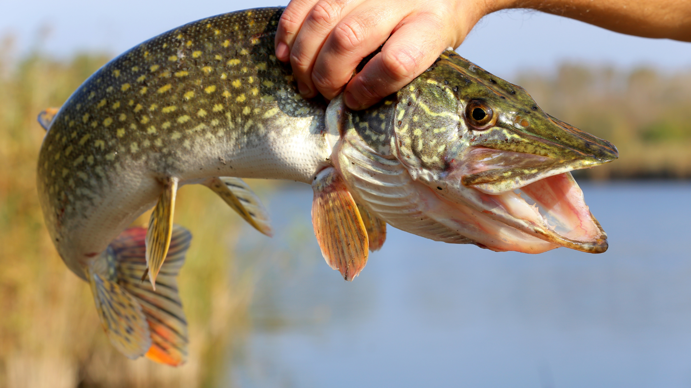
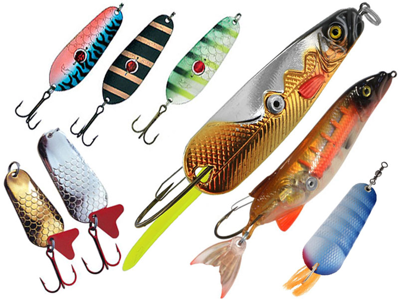

Пресноводная хищница одна из самых желанных трофеев рыбака. Одна из самых
распространенных рыб
на территории нашей страны. Ловля щуки возможна, как в теплое так и в холодное время года так, как
она ведет активный образ жизни круглый год.
Удлиненное, сжатое с боков тело с далеко отнесенными назад спинным и анальным плавниками напоминает
стрелу с оперением. Такое сложение позволяет ей делать молниеносные броски из засады.
Клинообразная голова с вытянутым рылом имеет огромную пасть с большим
количеством острых отгибающихся назад
зубов.
В водах рек и озер бывшего Советского Союза обитает много хищников. Можно встретить окуня, судака, жереха, берша. Но, пожалуй, самый известный пресноводный хищник – это щука. Она широко распространена в умеренных широтах Европы, Азии и Северной Америки. Повадки щуки очень специфичны, обычно она охотиться из засады. И в отличие от других хищных видов делает всего один точный бросок. Если все же ее настигает неудача, она возвращается на свое прежнее место и ждет следующую жертву. Она может начать преследование только тогда, когда голодна. А голодной она бывает два раза в год. Жор щуки отмечается в весеннее и осеннее время.
Ее длина достигает 1,5 метра, а вес доходит до 35 килограмм. Но, конечно же, чаще на крючок рыбакам попадается полуметровая щучка, весом в 1-2 килограмма. Самая крупная зарегистрированная трофейная щука на территории бывшего Советского Союза была поймана в 1930 году, вес ее оказался 34 килограмма.

Мощные удилища, силовые катушки, крепкие плетеные лески, прочные поводки и надежные крючки, все это арсенал настоящего щукаря. Щука обладает острейшими зубами, которыми она с легкостью перекусывает самую толстую леску.При ловле щуки нужно обязательно использовать поводки.
Самой популярной снастью для ловли щуки можно с уверенностью назвать спиннинг. С помощью спиннинга щуку можно ловить с берега и с лодки, в стоячей или проточной воде и практически в любых условиях. Для ловли на спиннинг используются специальные искусственные приманки, которых в рыболовных магазинах бесконечно много.
Удачно можно ловить щуку и с помощью поплавочной удочки. Многие заядлые рыбаки предпочитают именно этот способ, несмотря на наличие более современной снасти — спиннинга. Плюсы поплавочной удочки в том, что вместо искусственной приманки, хищнице предлагается естественная её пища — рыбка, то есть, живец. На некоторых водоёмах зубастую действительно очень сложно обмануть и клевать на металлические или силиконовые приманки она отказывается наотрез, тогда как на живца берёт очень даже неплохо.
Жерлица представляет собой катушку, установленную на широкой подножке. Сигнализатором поклёвки служит яркий флажок, обычно оранжевого цвета, который очень хорошо видно на фоне снега. Когда жерлица устанавливается, флажок фиксируется под катушкой, после поклёвки щуки катушка начинает вращаться и разматываться, в результате чего флажок выстреливает, подавая знак рыболову.